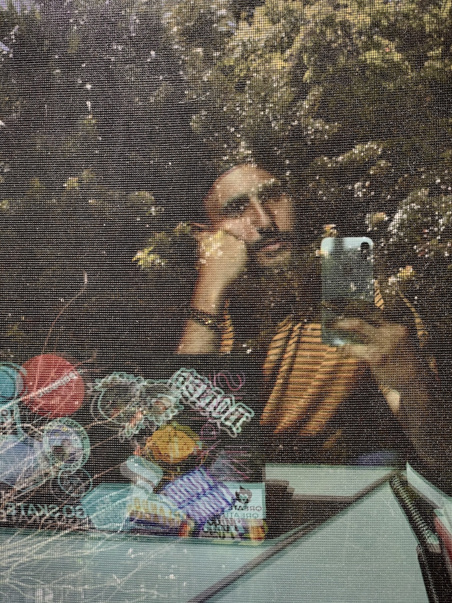

Background
I'm a Spanish/Italian American born and bred in Olympia, Washington. I studied Music Production at Valencia College.
In the past, I spent many years teaching my community how to create with technology at Apple. I also regularly worked to troubleshoot and repair devices for our returning customers. It was there that I learned about the impact of the customer journey, and what goes into building a brand from the front-line of support.
It's no surprise that I'm a bit of a nerd. I love camera gear and instruments, and I get much joy out of them when I get to create and collaborate with other creatives. I have a passion for yoga and meditation, and I enjoy spending my mornings with my cat Marvolo. Yes, if you caught that, I'm a bit of a Harry Potter nerd as well.
That's a bit about me, in a nutshell. If you'd like to know more about me, you can view my daily musings on my Instagram.
Goals
While I'm a bit of a late bloomer to the world of design, my aim is hone in on graphic design and web development to become a UI/UX professional. Current skills and abilities that I'm focused on include:
- HTML
- CSS
- UI
- UX
- JavaScript
- Landing Pages
- Typography
- Identity Design
- Design Principles
After I complete my certification, my goal is to work for a design firm or department to create an momentous online presence.
